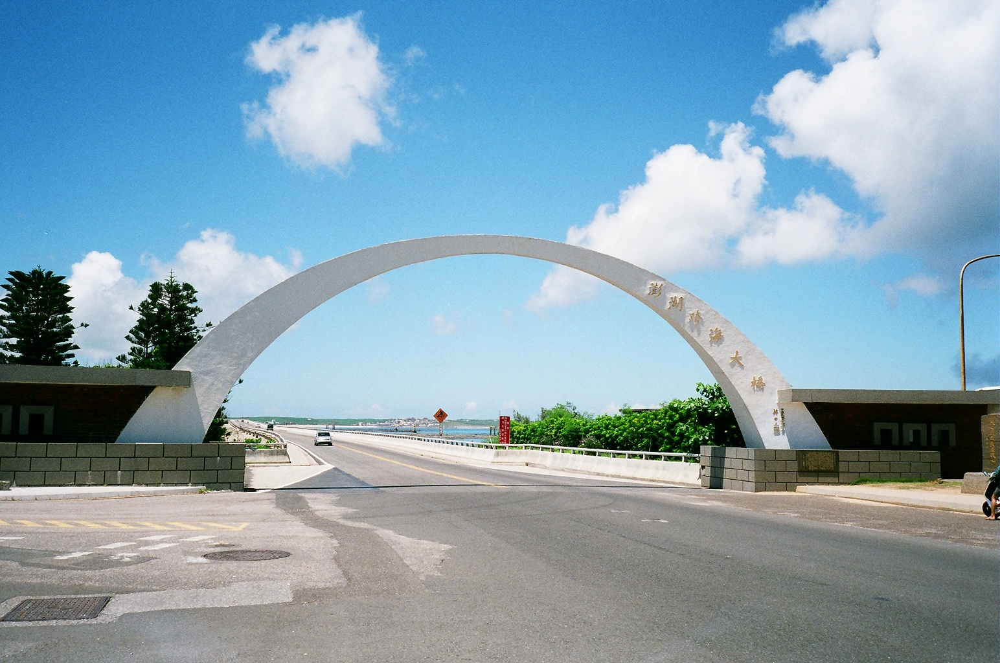
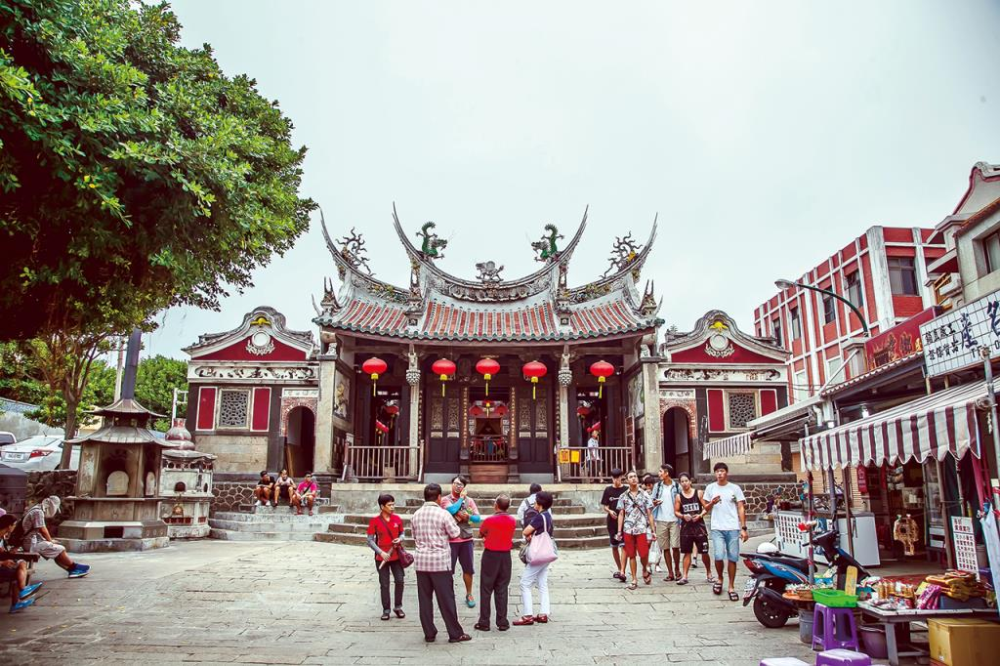
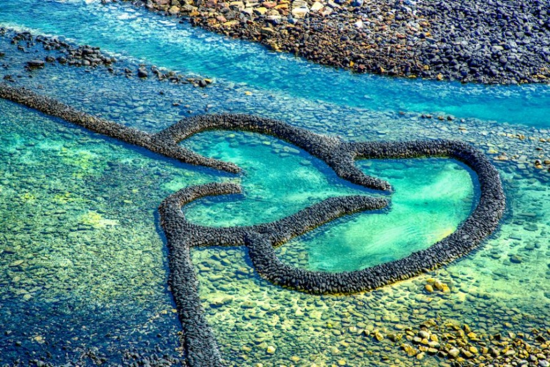
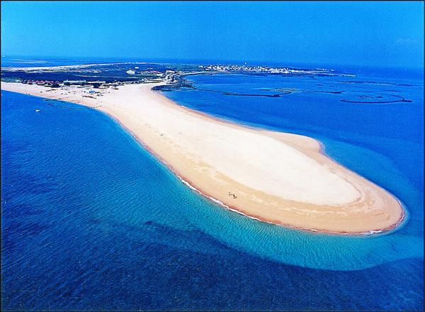

探索澎湖
澎湖是台灣西部的一個美麗群島，擁有清澈的海水、美麗的沙灘和獨特的海蝕地貌。以下是澎湖著名的景點:

澎湖跨海大橋
連接白沙、西嶼兩島的跨海大橋，橫跨波濤洶湧的吼門水道，全長2,494公尺，兩端建有半圓形拱門，建好當時為遠東最長的跨海大橋。 該橋於民國59年（西元1970年）完工通車，初時僅為單線，會車不易，經重建拓寬為雙線，並於民國85年（西元1996年）3月完工，使島間交通更為便利。

澎湖天后宮
位於馬公市中央里的天后宮主祀媽祖，建於西元1604年，是全臺灣歷史最悠久的媽祖廟。廟體建築出自唐山名匠之手，有深具藝術造詣的各類建築構建與裝飾，廟中並典藏有現存全臺灣最早的古碑—沈有容諭退紅毛番韋麻郎等之碑，陳列於清風閣文物館中供民眾參觀，另有清乾隆皇帝御賜題「與天同功」的金匾可供憑弔，俱為珍貴的歷史文物。

澎湖七美
七美嶼為一被切割之臺地，因流水作用與地質岩性，於北側西湖村與西側平和村形成河谷地形，整個島是東北高西南低的傾斜臺地，島嶼中間被一座東西走向之山陵（俗稱中崎山），分成南、北兩部分。 七美嶼海拔高度為澎湖群島第二高，僅次於「貓嶼」。 七美嶼西南方三十浬處即是聞名全臺的「南淺漁場」，自古以來即是著名的漁場。

澎湖吉貝
吉貝嶼，古地名為嘉貝嶼，是澎湖群島北海地區最大島嶼。 吉貝因島嶼形狀宛如一枚螺貝漂浮在海面上，因此先民稱呼這個島嶼為「嘉貝嶼」，後期以諧音改名為「吉貝」。 吉貝嶼位於白沙島北方約5.5公里，四周有石滬群和珊瑚礁地形，島內更有豐富的人文景觀與文化遺址。 東南海岸的岩層已被侵蝕成為海蝕平臺。